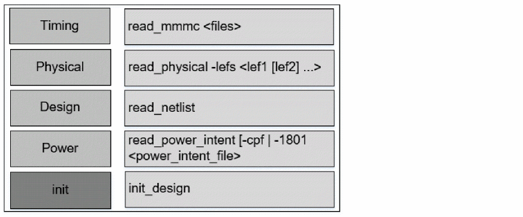
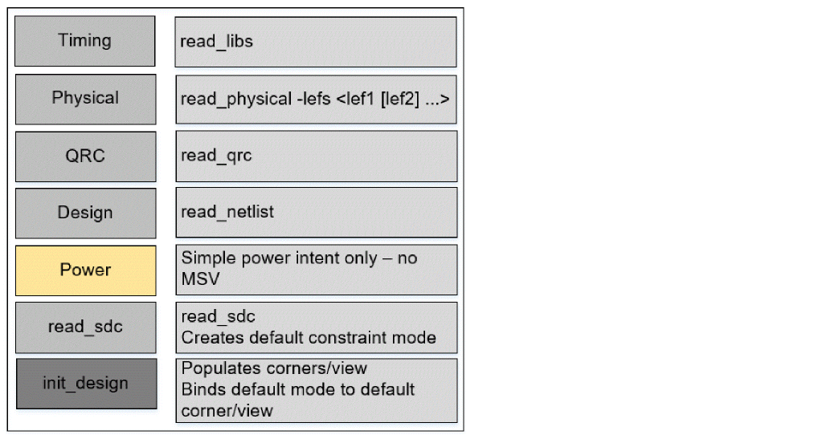
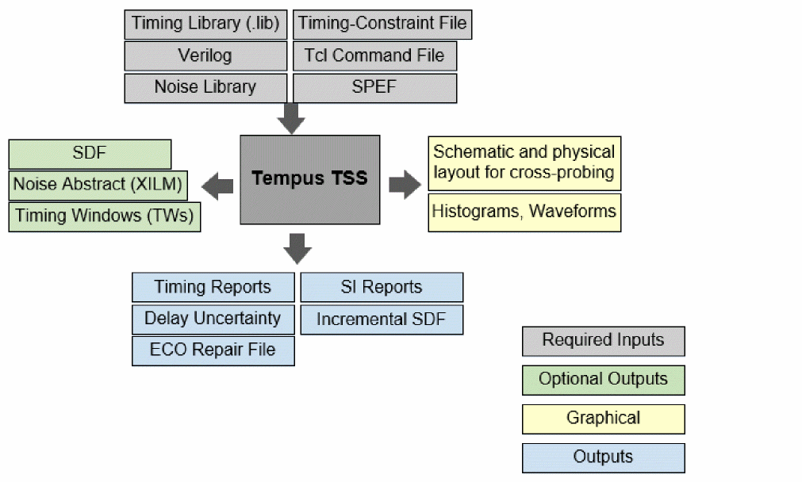

Base Delay Analysis Flow
The base delay analysis flow is described below:
Initialization Flow - MMMC Mode
The following figure shows the initialization flow in MMMC mode.
Figure -1 Base Delay Analysis Initialization Flow - MMMC Mode

Non-MMMC Initialization Flow
The following figure shows the initialization flow in non-MMMC mode.
Figure -2 Base Delay Analysis Initialization Flow - Non-MMMC Mode

Sample Base Delay Calculation Script
You can use the following script to calculate base delay:
-
Specify the design size:
set_db–process28 -
Load the design data. Follow the steps given below.
-
Load the timing libraries (.lib):
read_libs -
Schedule reading of structural gate-level verilog netlist:
read_netlistdma_mac.v -
Set the top module name, and check for consistency between the Verilog netlist and timing libraries:
init_design -
Load the timing constraints:
read_sdcconstraints.sdc -
Load the cell parasitics:
read_spefcell.spef.gz
-
Load the timing libraries (.lib):
-
Generate the timing report:
report_timing -
Report base delay calculation details for the arcs:
report_delay_calculation–from inst1/A –to inst1/Y
Base Delay Analysis - Inputs and Outputs
Inputs
- Timing Library (CCS or ECSM preferred): Contains the timing data.
- Netlist: Specifies a circuit netlist in Verilog.
- SPEF: Specifies the RC parasitics information in SPEF format.
- Command File (Tcl): Contains a series of Tcl commands.
- Noise Library (CCS-N, ECSM-SI, or cdB) (Optional input): Contains characterized noise data.
- Timing Constraints: Specifies the timing constraints, including clock propagation, in a SDC file.
Outputs
- Timing Reports: Contains details about the critical paths in the design.
- Delay Report: Contains details about delay changes - with or without crosstalk.
- SDF File: Contains the negative and positive delay changes caused by crosstalk. The full SDF file contains details about the absolute delays for all cells and interconnects, including crosstalk impact.
- Noise Abstracts: Specifies an XILM abstract noise model. An XILM model is a detailed noise abstracts that can be used to perform hierarchical timing and noise analysis. This model contains cells that belong to block interface logic, and internal cells/nets that are coupled to the interface logic.
- Noise Report: Contains details about the glitch noise on nodes.
The inputs and outputs are shown in the diagram below.
Figure -3 Inputs and Outputs required for Base and SI Analysis

Return to top